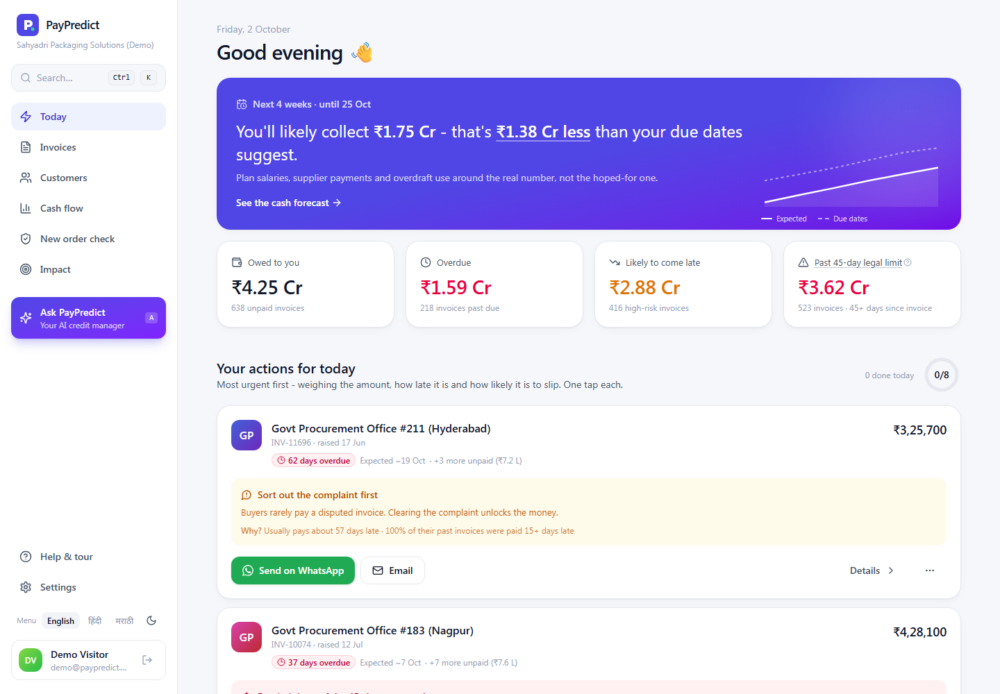
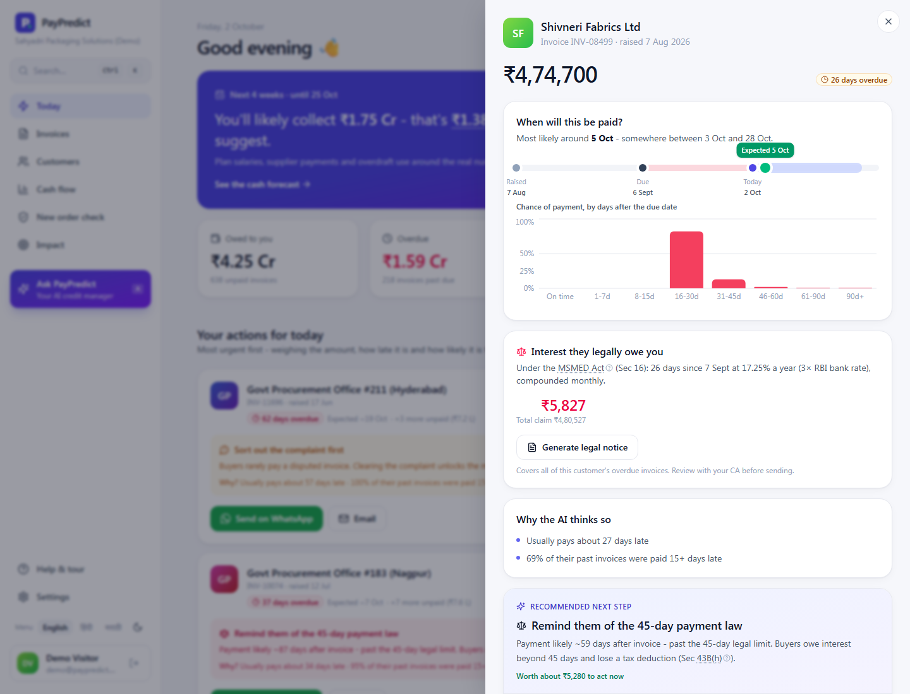
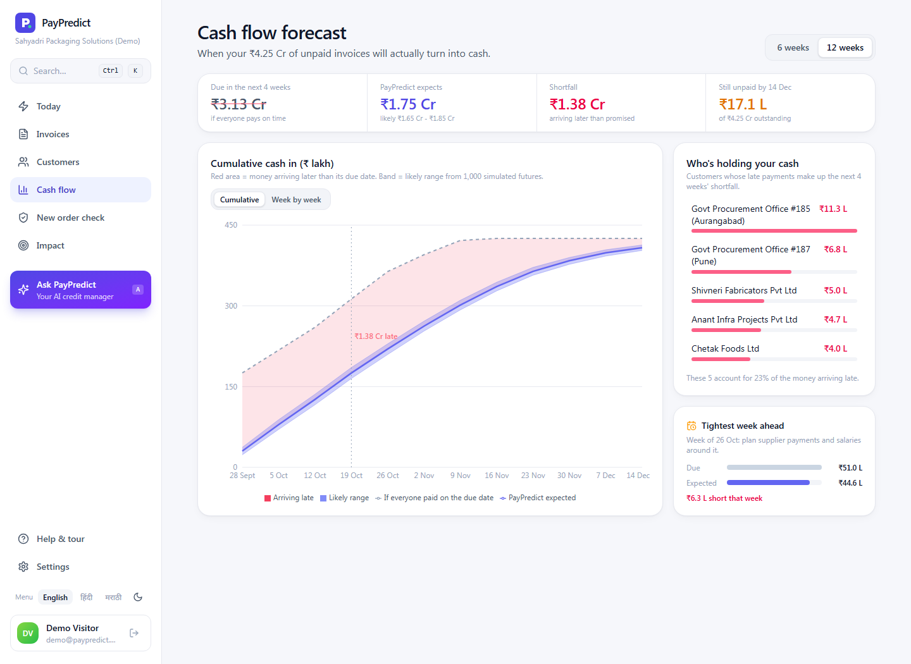
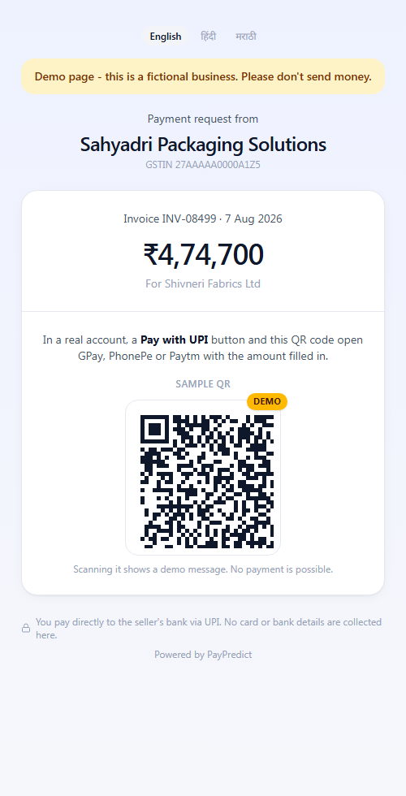
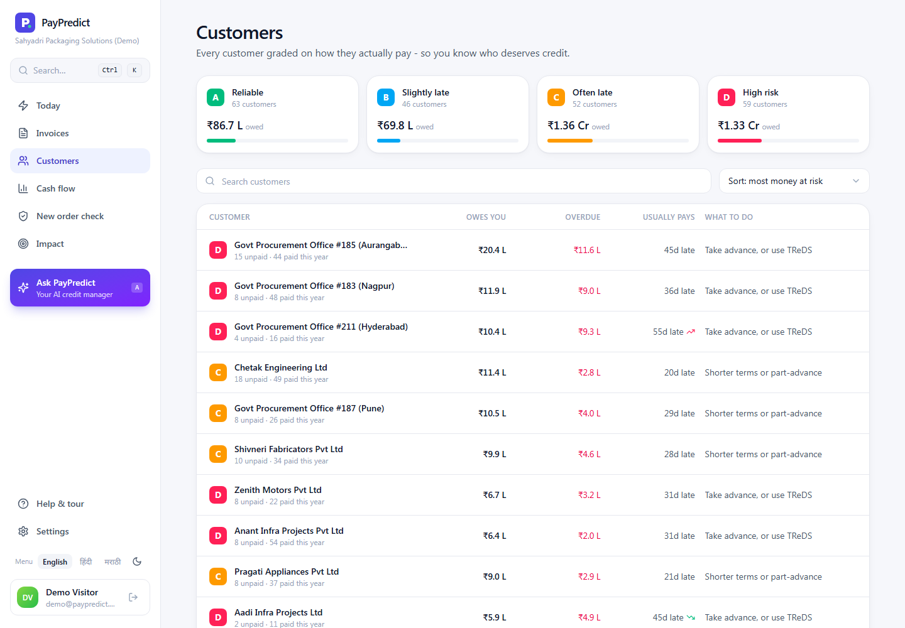
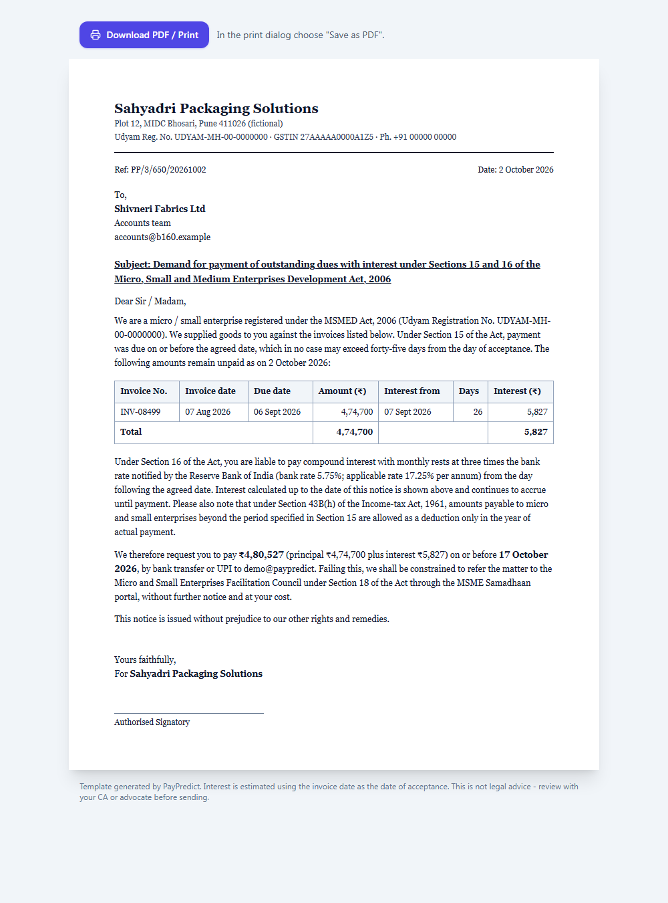

An AI credit manager for Indian MSMEs that predicts when every unpaid invoice will really be paid, explains why, and recommends the cheapest action that gets the money in.

Indian micro and small enterprises (MSEs) sell on credit to larger buyers and then wait. Payments routinely arrive weeks after the due date, so owners borrow on overdrafts to pay salaries and suppliers, while the law that is meant to protect them (the MSMED Act's 45-day rule and Income-tax Section 43B(h)) goes largely unused because chasing buyers is awkward and manual.
PayPredict turns a business's own invoice ledger (a Tally or Excel export) into a daily, ranked to-do list. A time-to-payment model predicts the real payment date of every unpaid invoice; a decision engine picks the cheapest effective next step (a reminder, an early-payment discount, a 45-day legal reminder, selling the invoice on TReDS, or a formal MSME Samadhaan notice); and the app writes the message in English, Hindi or Marathi with a one-tap UPI payment link, so the customer can pay immediately. The product is live and working, not a mock-up.
*Honest back-test: trained on 7,925 older invoices, tested on 2,735 newer ones the model never saw (sample business; see Section 6 for the data disclosure).
Small Indian suppliers cannot tell which customers will pay late, so they find out too late, chase the wrong invoices, and fund the gap with expensive overdrafts.
Late payment is one of the most cited problems of Indian MSMEs: an estimated ₹10.7 lakh crore of MSME receivables were delayed in FY2022 (GAME & FISME study, 2022). The law already favours the supplier: under the MSMED Act, 2006 a buyer must pay a registered micro or small supplier within the agreed period and never later than 45 days (Sec 15), after which compound interest at three times the RBI bank rate is owed (Sec 16); and since FY2023-24, Section 43B(h) of the Income-tax Act denies the buyer a tax deduction for such dues until they are actually paid. In practice these levers stay unused, because suppliers fear upsetting customers and have no tool that tells them when to use them and how.
The accountant exports an "outstanding" list sorted by age, calls whoever is oldest or largest, and sends the same polite message to everyone. Nobody knows which invoices are about to slip, the owner learns about a cash gap when salaries are due, and legal levers are used only once a relationship has already broken down.
| Pain point | Why it happens | Business impact |
|---|---|---|
| No early warning | Due dates say nothing about real behaviour; ageing reports only show what is already late. | Surprise cash gaps; overdraft drawn at roughly 11 to 16% a year. |
| Effort spent on the wrong invoices | Chasing is ordered by age or amount, not by risk and money at stake. | Hours of follow-up with little effect; risky invoices slip further. |
| One-size-fits-all reminders | No guidance on when a discount, TReDS or a legal reminder is the cheaper option. | Either too soft (money stays out) or too harsh (relationship damage). |
| Legal rights unused | Interest under MSMED Sec 16 is hard to compute and notices are hard to draft. | Interest owed by law is never claimed; disputes drag on. |
| Credit given blindly | New orders from already-slow buyers are accepted on the same terms. | Exposure piles up with the worst payers. |
| No cash visibility | Forecasts assume everyone pays on the due date. | Salary and supplier payments planned on money that will not arrive. |
In the sample business used throughout this report (a fictional Pune packaging company with ₹22.6 Cr annual sales), 51% of invoices were paid more than 15 days late and ₹4.25 Cr was outstanding at any time: about 58 days of sales locked up.
PayPredict is a web app (desktop and phone) that works on the business's own data and fits into a five-minute daily routine.
Excel or CSV export from Tally, Zoho, Busy; columns matched automatically.
Each customer's payment habits; model trained and back-tested in seconds.
The few customers worth chasing today, ranked by money at stake.
Message written in EN / हिंदी / मराठी with a UPI pay link; sent on WhatsApp.
Customer pays by UPI and taps "I've paid"; owner confirms in one tap.
Ignored reminders escalate; impact measured against the AI's forecast.
| Feature | What the user gets |
|---|---|
| Today action list | One card per customer: amount, status, predicted payment date, the recommended step in plain words and "Why?" (for example "Paid their last 3 invoices about 24 days late"). Progress ring and undo on every action. |
| Payment-date prediction | For each invoice: expected date, likely range and the chance of payment in each period, shown on a timeline (raised, due, today, expected). |
| Cost-based action engine | Chooses between resolving a dispute, fixing paperwork, a reminder, a 1% early-payment offer, a 45-day legal reminder, selling on TReDS or a formal notice, by comparing their cost and effect. |
| UPI pay links | Every message carries a short secure link to a mobile payment page with a "Pay with UPI" button and QR code. Money goes straight to the seller's bank with no gateway fee. |
| Legal interest & notice | Computes interest owed under MSMED Sec 16 and generates a ready-to-print demand notice (with Udyam number) covering all of a customer's overdue invoices. |
| Cash-flow forecast | Week-by-week collections expected vs what due dates promise, a likely range from 1,000 simulated futures, the tightest week, and which customers are holding the cash. |
| New order check | Before dispatch: Approve / Approve with conditions / Hold, the advance to ask for, a safe exposure limit, and a message to the customer. |
| Customer grades | A to D grades from the last 12 months of real payments, trend arrows and plain advice ("Shorten credit terms or ask part-advance"). |
| Ask PayPredict | A conversational assistant (Claude) that answers questions such as "Who should I call first?" by looking up the business's own numbers. |
| Made for first-time users | One-click demo, a 21-step guided tour, a getting-started checklist, Ctrl+K search, keyboard shortcuts, plain-English tooltips for terms like TReDS and 43B(h), dark mode and phone layout. |
| Capability | Accounting software reminders (e.g. Tally / Zoho) | Generic collection / dunning tools | Credit bureaus | PayPredict |
|---|---|---|---|---|
| Predicts when each invoice will be paid | ✕ | Partial | ✕ | ✓ with range |
| Recommends the cheapest effective action | ✕ | Fixed sequences | ✕ | ✓ cost-based |
| Uses Indian levers: MSMED 45 days, 43B(h), TReDS, Samadhaan | ✕ | ✕ | ✕ | ✓ |
| Computes statutory interest & drafts notice | ✕ | ✕ | ✕ | ✓ |
| Messages in Hindi / Marathi with UPI pay link | ✕ | Partial | ✕ | ✓ |
| Checks credit risk at order time from own ledger | ✕ | ✕ | Bureau data only | ✓ |
| Explains every prediction in plain words | ✕ | ✕ | Score only | ✓ |
Comparison based on publicly described feature sets; individual products vary.
In short: others stop at a reminder or a chart; PayPredict predicts the date, chooses the cheapest lever (including the legal ones), writes the message and lets the customer pay in one tap, then learns from what worked.
Stack: React 18 · TypeScript · Vite · Tailwind CSS · Recharts | Python 3.11 · FastAPI · SQLModel · scikit-learn · pandas | PostgreSQL (Neon) · Docker on Render (Singapore) · GitHub auto-deploy | Claude API | HTTPS, CSP, HSTS, rate limiting · 47 automated tests.
Instead of a yes/no "will it be late" classifier, PayPredict models when an invoice will be paid. Each invoice's life after its due date is split into eight periods (on time, 1-7, 8-15, 16-30, 31-45, 46-60, 61-90 and 90+ days late). A gradient-boosted classifier learns the hazard: the chance of payment in a period, given that the invoice is still unpaid at its start.
Customer's average and recent delay (last 3 invoices), share of invoices paid 15+ days late, worst delay, amount already owed and already overdue, days since last payment, relationship length, invoice size vs their usual, credit terms, invoice month (festive season, March year-end), dispute and paperwork flags, government buyer, TReDS registration.
For every invoice, each feature is reset to a "typical" value and the change in expected delay is measured. Features adding two or more days become plain-language reasons, for example "Usually pays about 27 days late" or "69% of past invoices were paid 15+ days late".
For each open invoice the engine compares the cost of waiting with the cost of each lever, using the business's own rates (editable in Settings):
Rules respect real-world sense: a disputed invoice is never chased for payment first; government buyers get the MSMED reminder but not the 43B(h) line (it does not apply to them); a "relationship-first" setting prefers a discount over legal language for key customers; and an adaptive escalation ladder (reminder → incentive → legal reminder → formal notice) climbs when a customer ignores two nudges and starts where a lever has worked before.
A fully working product, deployed at paypredict-ad5f.onrender.com with a one-click demo. All screenshots below are from the running app.





Trained on 7,925 invoices raised before September 2025, tested on 2,735 later invoices whose outcome is known. Baselines: assuming customers pay on the due date (what most MSMEs do), and each customer's own historical average delay (a sensible rule of thumb).
56% smaller error than assuming due dates; 20% smaller than the rule of thumb.
| Metric | PayPredict | Baseline |
|---|---|---|
| Risk ranking (AUC) | 0.90 | 0.84 |
| Late money in top-20% riskiest | 42% | 34% |
| Payments inside "likely range" | 86% | - |
| Test / train invoices | 2,735 / 7,925 | |
Working capital is where the money is. For the sample business (₹22.6 Cr annual sales, about ₹6.2 lakh of sales per day, collection time of about 58 days), every day by which collection speeds up releases cash and saves overdraft interest:
| Scenario (illustrative) | Cash released | Overdraft interest saved per year (at 14%) |
|---|---|---|
| Collection time 5 days faster (58 → 53 days) | ≈ ₹31 lakh | ≈ ₹4.3 lakh |
| Collection time 10 days faster (58 → 48 days) | ≈ ₹62 lakh | ≈ ₹8.7 lakh |
| Collection time 15 days faster (58 → 43 days) | ≈ ₹93 lakh | ≈ ₹13.0 lakh |
Cash released = daily sales × days saved. These are scenarios to size the opportunity, not measured results; real impact must be measured in pilots, which the app does automatically (below).
Owners plan salaries and supplier payments on the expected ₹1.75 Cr for the next 4 weeks instead of the ₹3.13 Cr due dates promise, avoiding last-minute borrowing.
Interest owed under MSMED Sec 16 is computed per invoice and claimed in notices; the 43B(h) line gives large buyers a tax reason to pay on time.
Five minutes a day on the right customers replaces hours of calling; order-time checks stop new credit piling up with slow payers.
Measured, not claimed. The Impact page records money collected within 30 days of an action, days saved against the AI's own forecast at the moment of acting, interest saved and payments made through UPI links, so a pilot produces evidence rather than anecdotes.
Stateless API in one container; PostgreSQL with per-business isolation; models stored in the database; scoring of 600+ invoices takes about a second and runs in one batched update. Scaling means adding containers and a larger database, not re-architecture.
Freemium SaaS: free up to 50 customers, then roughly ₹499 to ₹1,999 a month by size; referral revenue from TReDS platforms and NBFCs for invoices financed; distribution through CAs and Tally partners who already serve MSMEs.
PayPredict addresses a problem every Indian MSME owner recognises: money that is owed but does not arrive when needed. It combines a statistically sound prediction of when each invoice will be paid with a decision engine that knows the Indian levers (the MSMED Act's 45-day rule and interest, Section 43B(h), TReDS and MSME Samadhaan), and turns both into one-tap actions in the owner's own language, with a UPI link that lets the customer pay on the spot.
The result is a working, deployed product rather than a concept: payment dates predicted 56% more accurately than due dates in back-testing, a daily to-do list that takes minutes, and a built-in way to prove its own impact. Its value proposition fits in one line: know which customers will pay late, and get paid before it hurts.